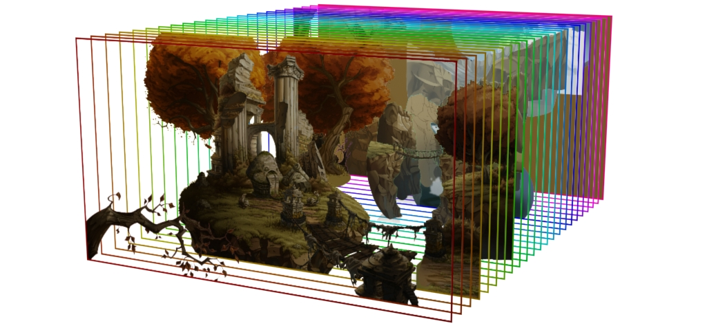

6 lectures on the Digital Image by Joel Gethin Lewis.
Visual Communication Expanded Practice Elective, Spring Term 2019.
Time and location: Thursdays, 1400-1700, RCA Garden House, White City, London.
Tutor: Joel Gethin Lewis.
The digital image helps us to think about visual culture in a different way. Digital technologies allow us to probe how images can be made, including elements (such as style) that were previously thought to be exclusively the domain of humans. The Parallax View will be an investigation into three different aspects of the digital image, each lasting for two weeks. For each aspect the first week will be an introduction to a brief, with a tutorial about the concepts involved. In the second week pair responses to the brief will be presented and constructively criticised by the group and invited guests. No programming experience is required, but you should bring a computer to all sessions. Programming and projects will occur in pairs.
Thanks to Kyle McDonald, Lauren McCarthy, Daniel Shiffman, Jessica Bland, Rune Madsen, Rifke Sadleir, Eva Papamargariti, Nicholas Mirzoeff, Francesca Gavin, Rathna Ramanathan, Luke Pendrell and Debbie Cook.
Breakdown of syllabus:
References:
{kind=link}